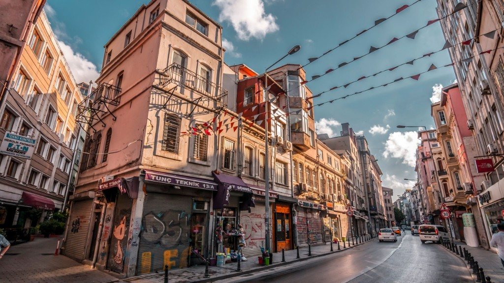
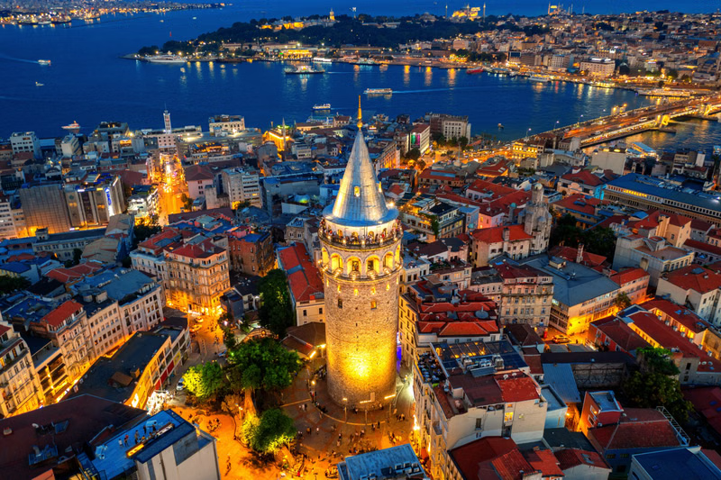
Instagrammable: Stand on the side streets below the tower for the classic 'tower looming above' shot. Best before 11am without crowds.
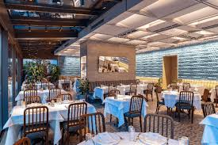
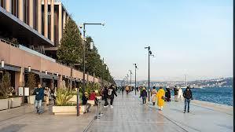
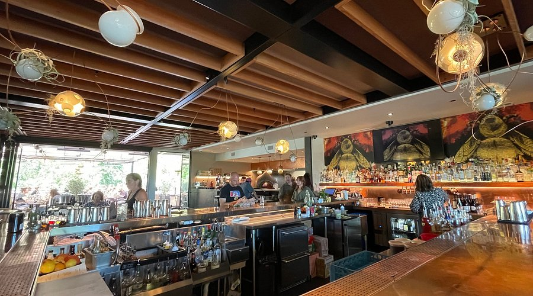
Pro tip: The streets below Galata Tower are most photogenic in late morning light. Arrive before 11am for photos without crowds.
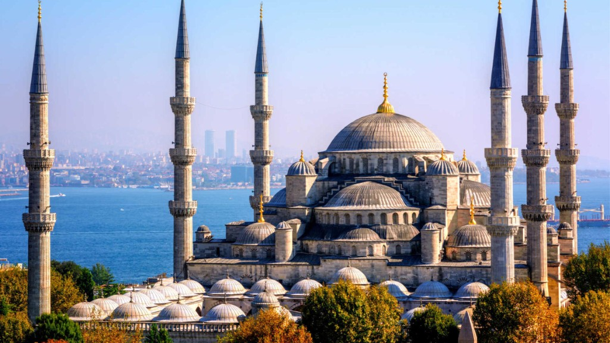
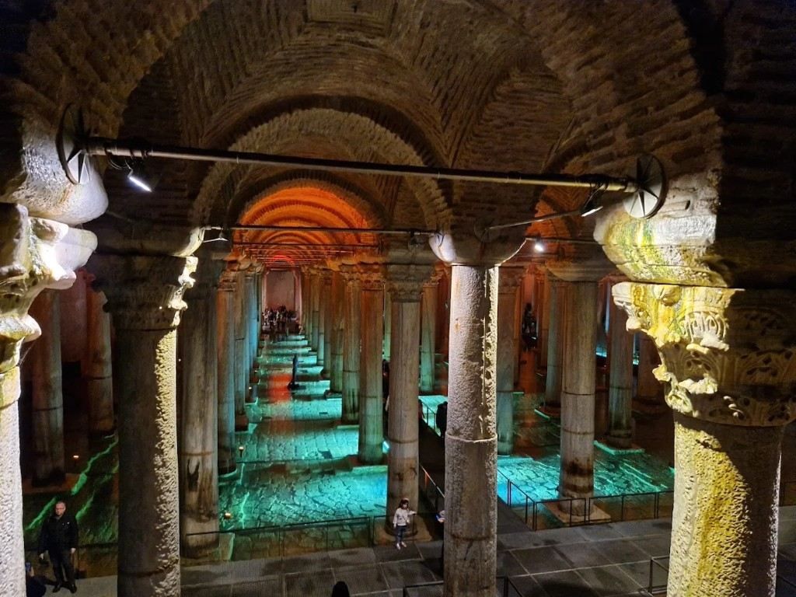
Instagrammable: The best shot is from the pathway between Hagia Sophia and Blue Mosque with ornate lamps framing both.
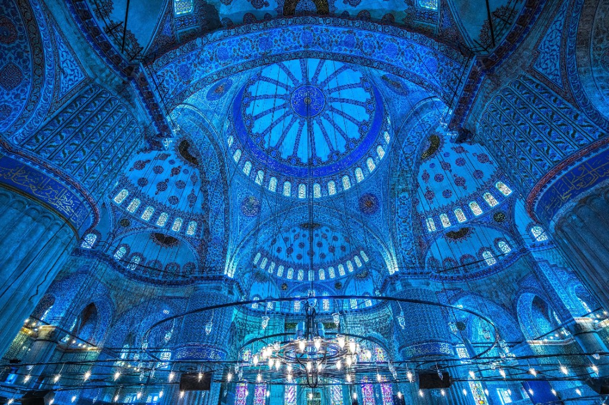
Instagrammable: The dramatic lighting changes throughout — the reflections in the shallow water create magical mirror effects. Use portrait mode.
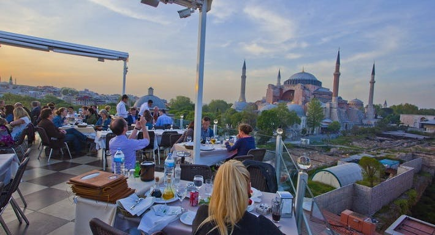
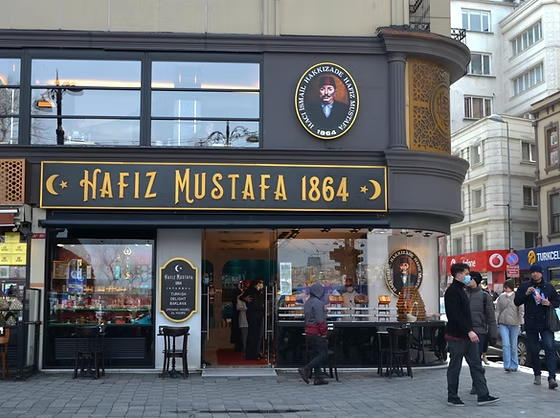
Pro tip: Arrive at Hagia Sophia at 9am sharp — lines reach 1-2 hours by 10am. Dress modestly (shoulders + knees covered).
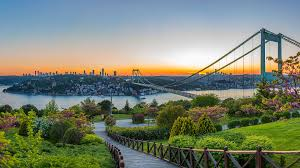
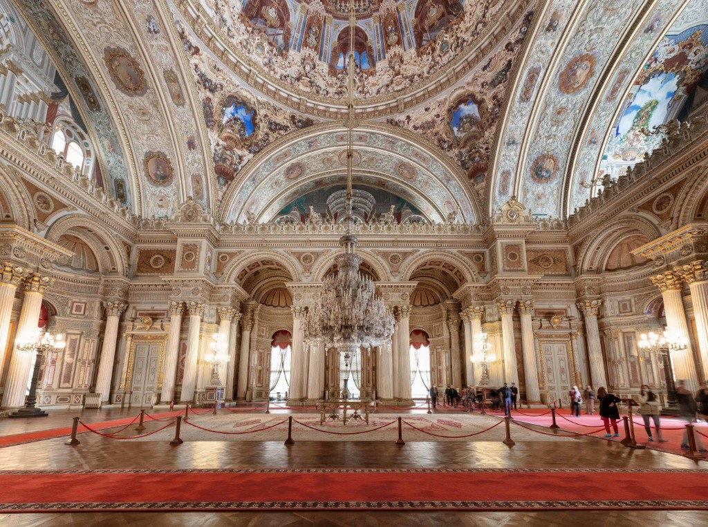
Instagrammable: Best at sunrise, but stunning anytime. Stand at the harbor edge for the classic mosque + bridge composition.
Pro tip: Bring a light jacket — it's breezy on the water at sunset. Best photo: passing Maiden's Tower.
Instagrammable: Lantern Courtyard 10:30-12:30 when light mixes with glowing lamps. Carpet tunnels = stunning leading lines.
Pro tip: Never accept the first price — haggling is expected. Start at 40-50%.
Pro tip: Weekday = no crowds. Bring water + sunscreen. Take the 9:00-9:45 AM ferry.
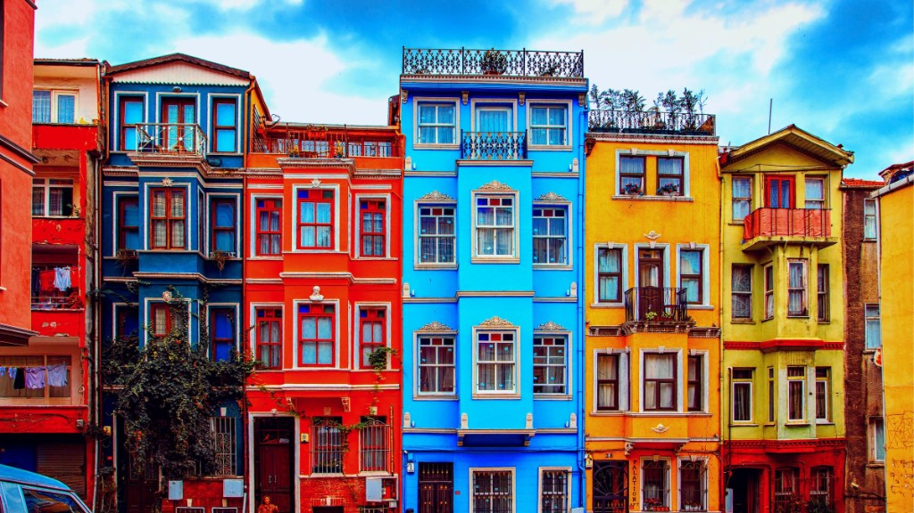
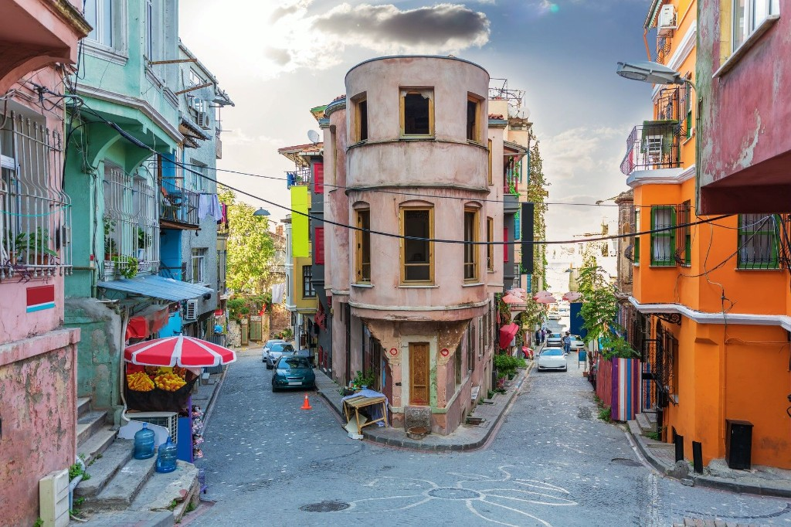
Instagrammable: Arrive before 11am. Best light on Kiremit Street mid-morning. Painted stairs = #1 Balat photo.
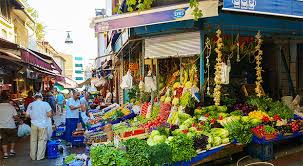
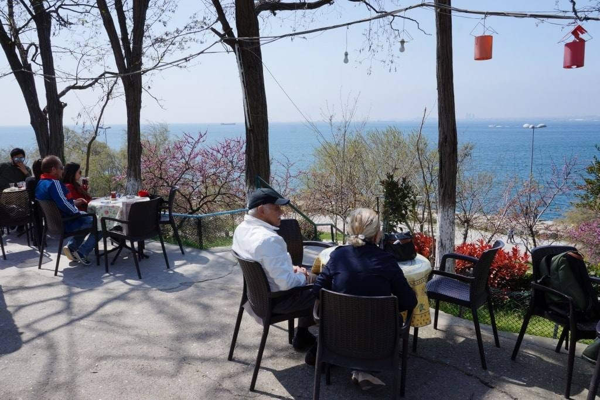
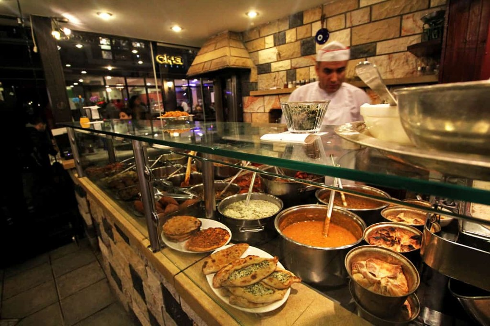
Pro tip: Taxi from Kadikoy to Camlica (~15 min, cheap). Arrive before sunset.
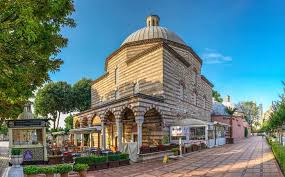
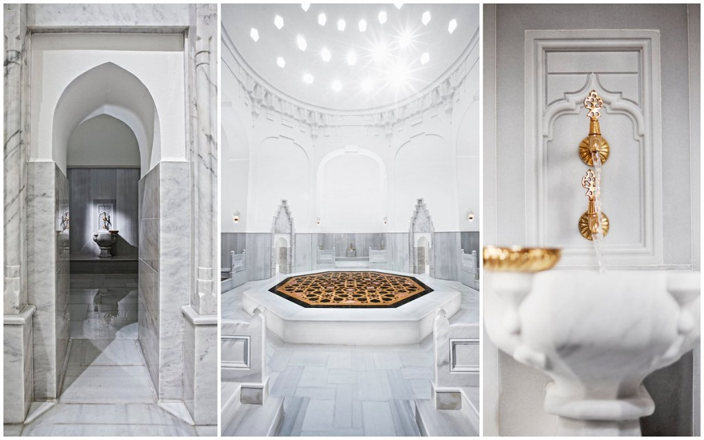
Pro tip: Book hammam in advance. Mikla: reserve terrace table. Tasting menu is the move.